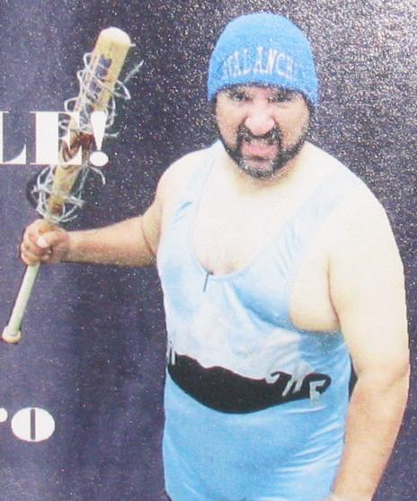

Who is the Avalanche?
Avalanche or as most people know him as, Lou Trevino, is a man of many talents. He has gone through several paths in his lifetime such as Pastor, Wrestler, Community Leader, and Gamer (not the video game kind).
As a wrestler he was known by many names: The RGV Sasquatch, The Hardcore Icon, and of course Avalanche. At one point he held a World Heavyweight Title. In his wrestling days, he also performed stunts that would make people gasp. He did everything from breaking bottles on his head to using a barbed bat on himself! He was a beast back in those days.
Nowadays he has left the wrestling life and focuses on his community and family. I did not pry into his Pastor life but from several talks I have had with him, I can tell you that he gives some of the best advice you can receive. This is probably what makes him such a community leader. He often volunteers to dress as Santa and makes visits to hospitals or birthday parties. He also is part of the local Lions club that helps host community events in town.
Overall, Lou is a gentle giant with a big heart.
Notable Achievements
- Former World Heavyweight Champion Wrestler
- Community Leader & Volunteer
- Member of the Local Lions Club
- Dedicated Dungeon Master & Tabletop Gamer